Marco Pacori — Brand identity e sito web per un professionista di fama nazionale
Marco Pacori è uno dei professionisti più conosciuti in Italia nel suo campo: autore di libri pubblicati in tutto il mondo, presenza televisiva, formatore. Quando è arrivato da me, aveva già una reputazione consolidata. Il problema era che la sua identità visiva — logo e sito — non la comunicava all'altezza.
Ho costruito per lui un sistema di brand identity completo: logo, palette, tipografia e gerarchia visiva. L'obiettivo era che chi arrivasse sulla sua pagina percepisse autorevolezza in tre secondi, prima ancora di leggere una parola. Questo è il lavoro che ho fatto.
Il sito web è stato sviluppato attraverso Spark & Plan, il mio progetto dedicato al marketing e al digitale.
Cosa ho fatto
- — Brand identity completa per professionista della psicologia
- — Web design per sito web di psicologo: architettura orientata alla conversione (prenotazione sessione / iscrizione corso)
- — Identità visiva per formatori e speaker: palette, tipografia, gerarchia visiva pensate per attivare il bias di autorità
- — Comunicazione digitale per acquisire pazienti e corsisti
- — Ottimizzazione SEO on-page per professionisti sanitari e della formazione in FVG e a livello nazionale
Il metodo
Ho applicato i principi del neuromarketing alla scelta di ogni elemento visivo. La palette lavora sul bias di competenza professionale. La tipografia gerarchica guida l'occhio verso le azioni desiderate — prenotare, iscriversi, contattare. Il layout del sito riduce il carico cognitivo nelle pagine dove l'utente deve prendere una decisione.
Un sistema visivo che comunica autorevolezza in 3 secondi — prima ancora che l'utente legga una parola.


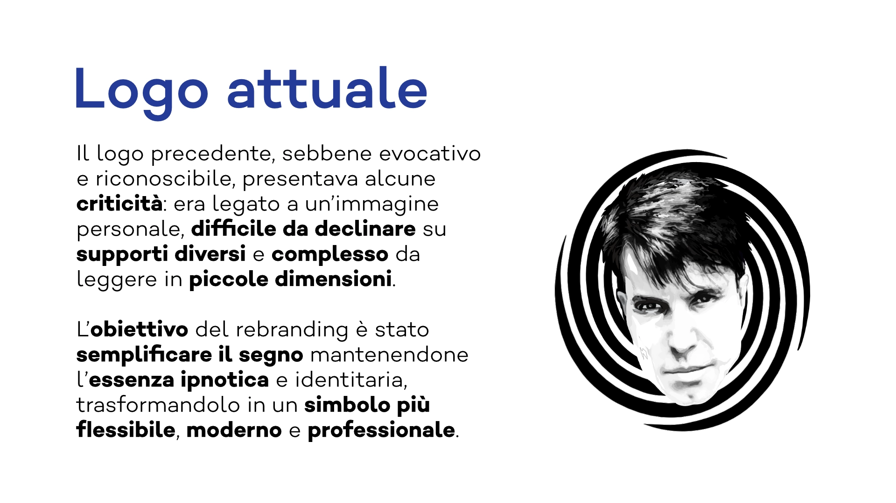

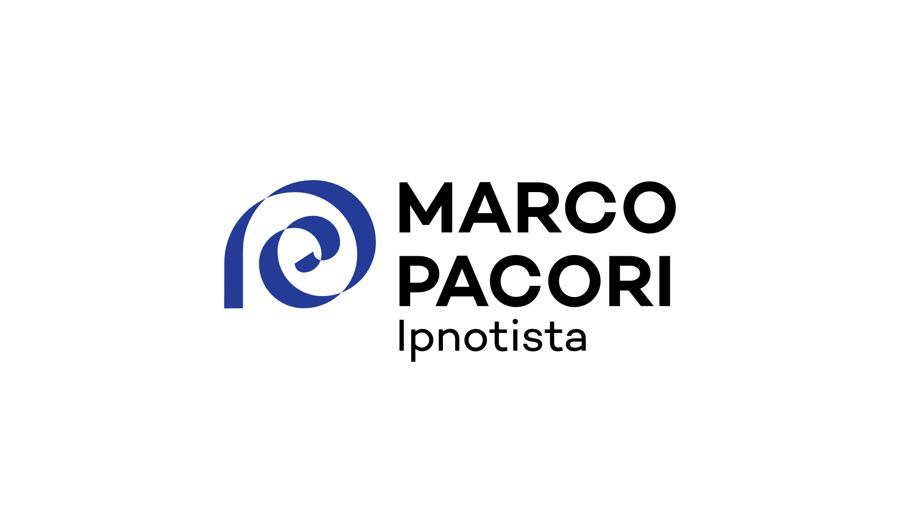
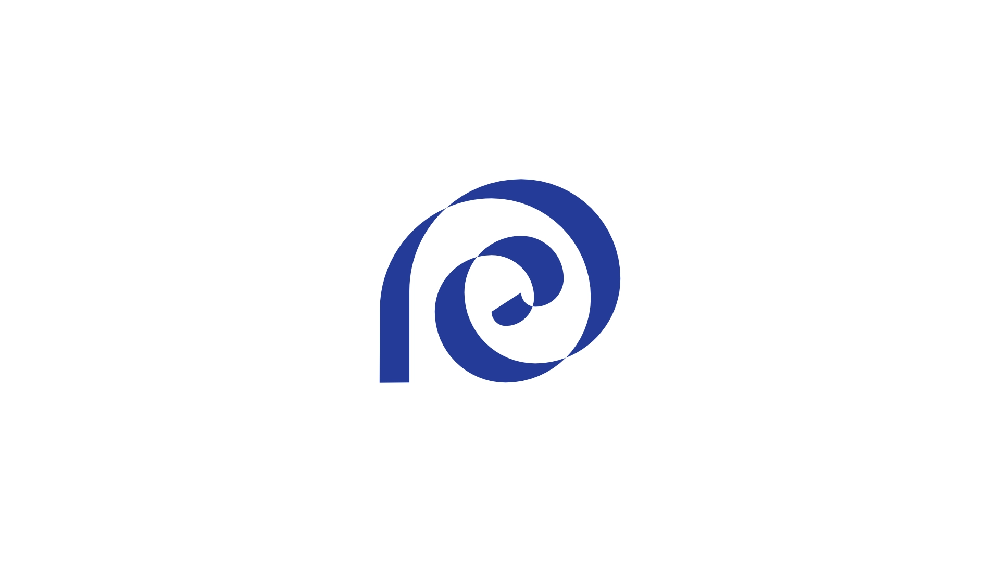
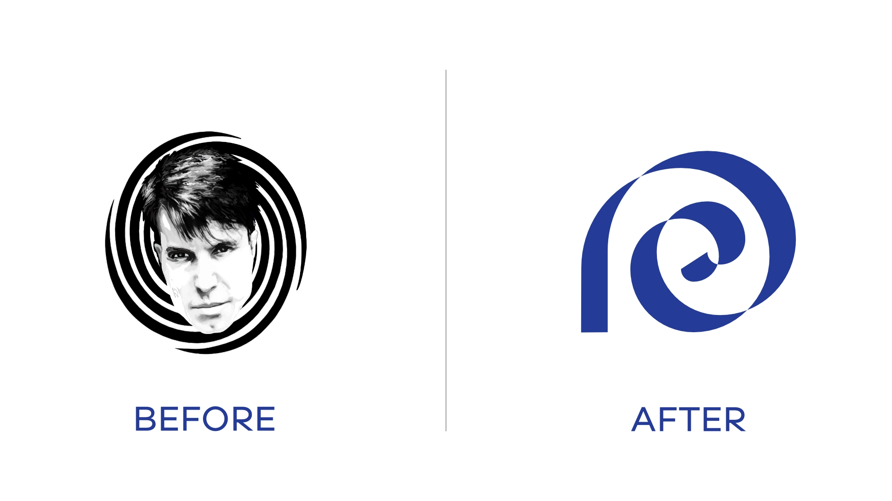
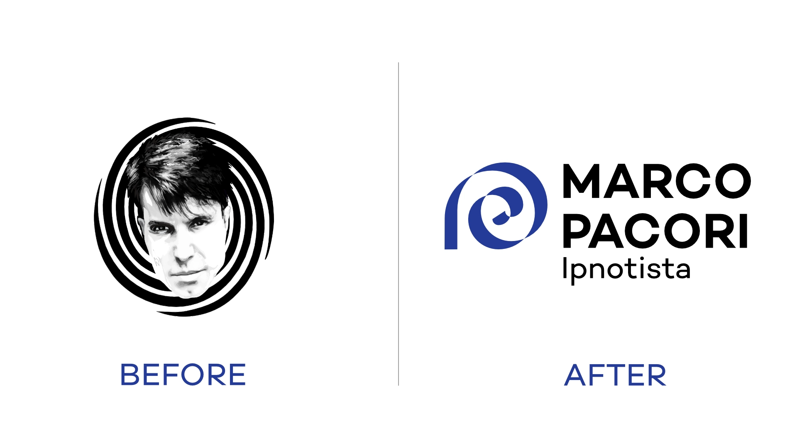
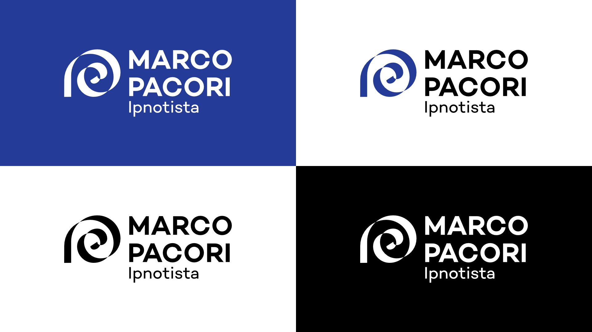
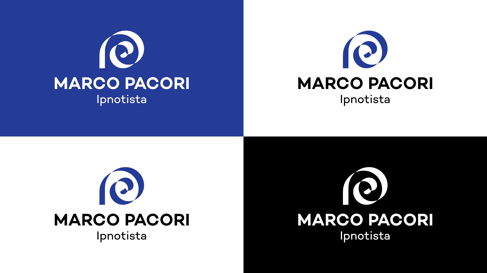
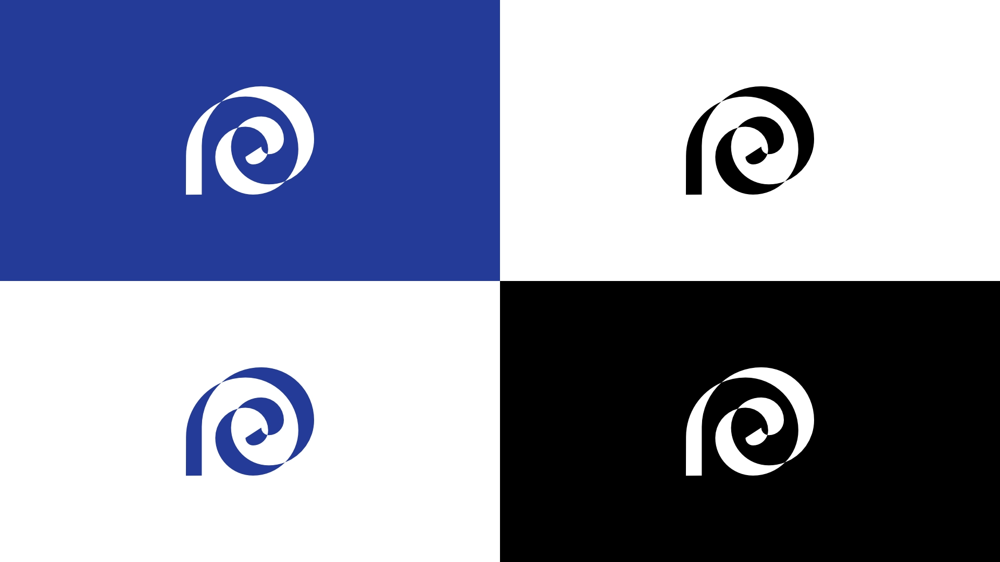
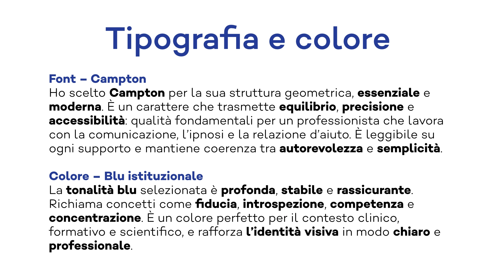
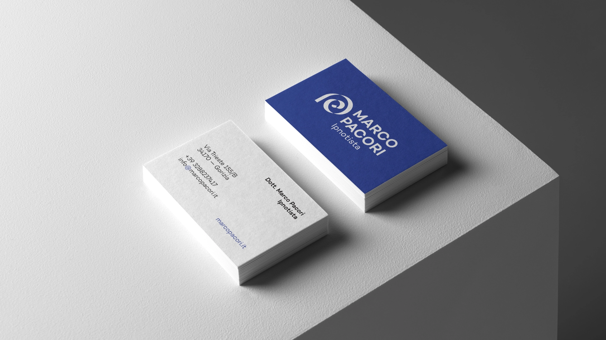
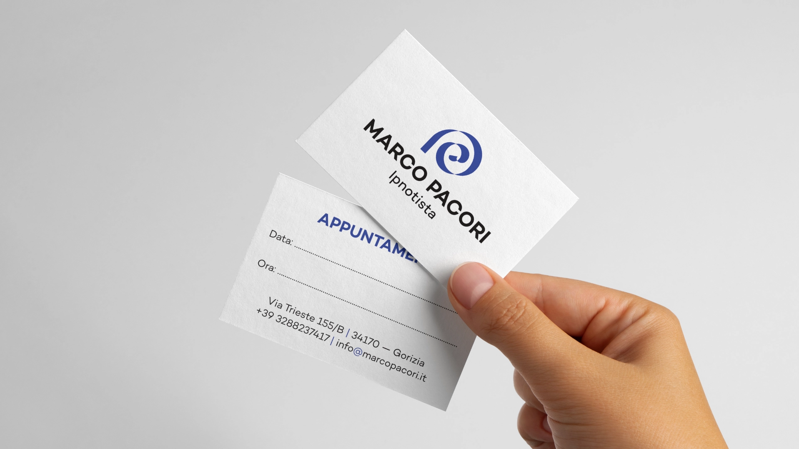
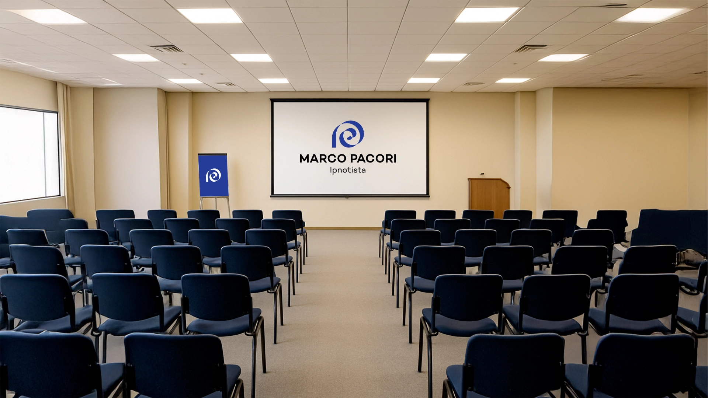
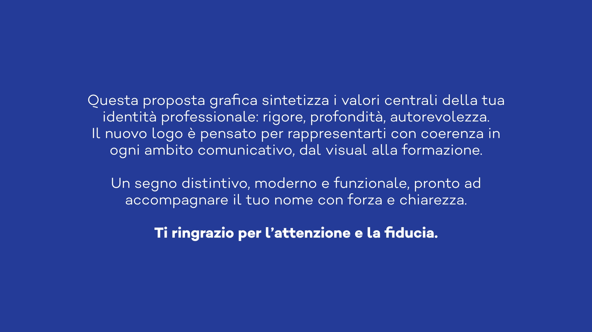
Sei un professionista che vuole una presenza visiva all'altezza della sua reputazione?
Costruiamo insieme un'identità che comunica il tuo livello prima ancora che tu dica una parola.
Approfondisci: Dietro le quinte del progetto Marco Pacori →